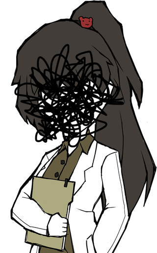

THE NON-SEPHIROT

Angela
Angela is a highly advanced Artificial Intelligence whose roles include the surveillance of the entire facility, giving X advice on how to interact with Abnormalities and handle breaches, acting as the manager of the Sephirot, and various other tasks around the facility. At the start of the game, Angela's personality is happy and upbeat, saying things like "Good luck!" and giving the Player compliments such as "it means that you are doing good work". She still maintains this demeanor even under grotesque circumstances, such as when she pours a bottle of champagne to celebrate that the Player has killed an employee for the first time. However, she becomes more negative and even hostile towards X as more days go by. Angela was programmed and constructed over a non-specific time of "many years". According to her, "all sorts of new algorithms and functions were created and a new history of AI was written" due to her creation. The thing that sets Angela apart from other Artificial Intelligences is, apparently, her ability to "express emotions like most human beings". She also perceives time 100 times slower. During the true ending of Lobotomy Corporation, Angela says has seen everything, over and over again, and throughout all of it she was allowed no relief or respite. Her job as an AI was to do absolutely nothing but follow Ayin's orders, repeating a never-ending play with her at the sidelines; pulling every string and doing every job, yet never allowed a bow at the curtain call. A refused to acknowledge her until the very end. As such, Angela has come to the conclusion that she deserves more than this, and as such, will take her happy ending by force, unconcerned with who this will affect, leading to the Distortion phenomenon and the "White Nights and Dark Days" to happen.
